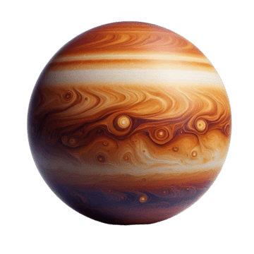

Earth's Twin — The Hottest Planet

Surface pressure is 92 times Earth's- equivalent to being 900m deep in the ocean. The runaway greenhouse effect keeps temperature constant at 462°C.
Venus rotates backwards - Sun rises in the west! A day on Venus is longer than its year (243 days vs 225 days).
Source: NASA's Scientific Visualization Studio